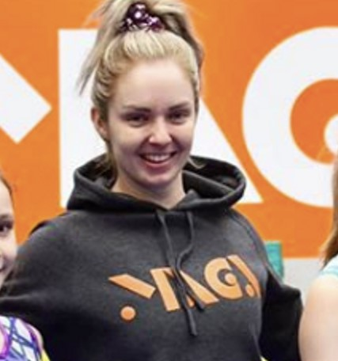
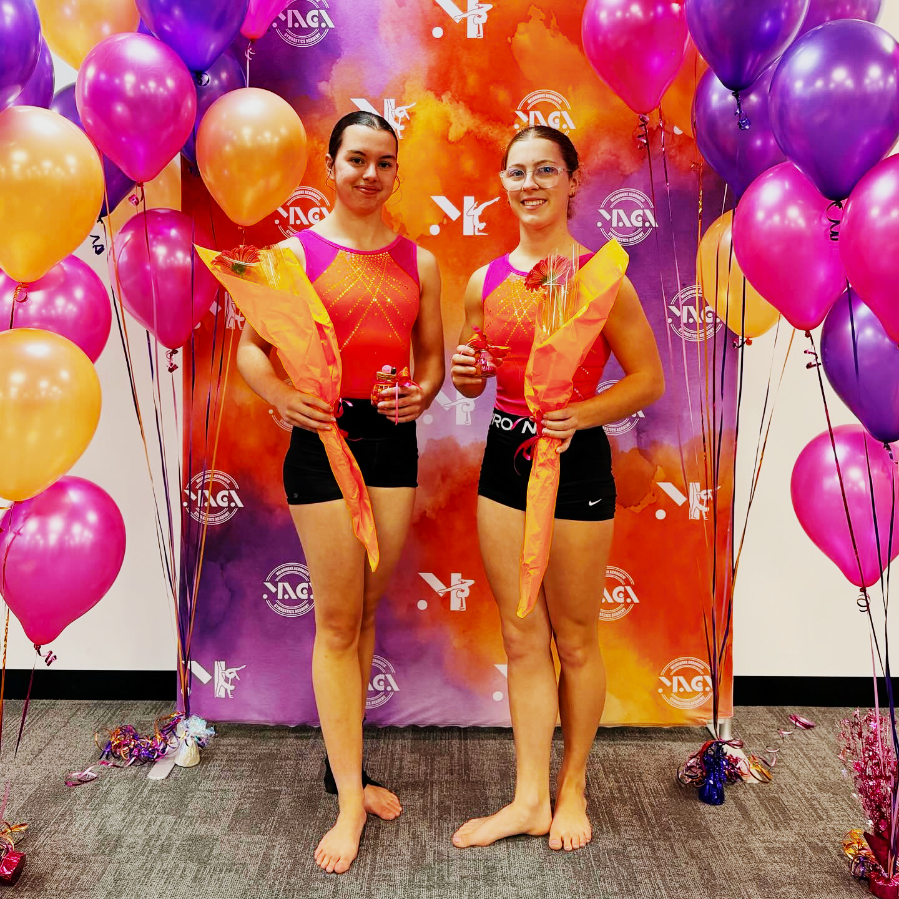

2025 Vic Champs L91st: Bottomley / Mete / Rawlings
2025 Vic Champs L61st: Ametoglou / Renwick
TL;DR
Melbourne Acrobatic Gymnastics Academy opened in Cranbourne West in August 2018, the realisation of founder Stephanie Fuller's years-long ambition to run her own gymnastics programme. MAGA's acrobatic gymnastics squads were Runners Up for the VIC State Pennant in their first year of competition; by 2025, the Level 9 trio of Tessa Bottomley, Madison Mete, and Brianna Rawlings had won the Senior Victorian Championships outright, and Jana Ametoglou and Lachlan Renwick had swept the Level 6 titles across trials and championships. When Funtastic Gymnastics closed under difficult circumstances in late November 2025, MAGA opened its doors to the displaced coaches and athletes, among them Head Coach Janet Howe, bringing an entire Division 1 WAG programme into a gym that had been ready for exactly this for a long time.
My daughter trains at MAGA. She joined MAGA when Funtastic closed in late 2025, and in the weeks that followed, I found myself doing what parents of gymnasts inevitably do: watching training, chatting at the door, and absorbing far more about how a club actually works than I had anticipated. This is the sixth profile in our series on Victorian gymnastics clubs, and for the first time I am writing about one I have a direct connection to. Last time, we looked at PIT Gymnastics in Mill Park. This time, it is personal.
That makes it harder and easier at the same time. Harder, because I want to be fair and not just write a tribute. Easier, because I have spent time inside the gym, formed opinions, and have something to say beyond what the database can tell me. There is genuinely a lot to say about MAGA.
Built from a dream
Stephanie Fuller describes MAGA as "a dream in the pipeline for a long, long time." Fuller was a WAG gymnast herself, her competitive career reshaped by scoliosis surgery at 14 before she competed until 19 and moved into coaching. That move into coaching is a familiar path in gymnastics, but from what I can gather from brief conversations since my daughter joined, the coaching role was never quite the destination; it was the road toward something bigger. She wanted to build something of her own.

Stephanie Fuller, MAGA
Melbourne Acrobatic Gymnastics Academy opened in August 2018 in Cranbourne West, reportedly three months ahead of schedule. The name was never going to be ambiguous: this was going to be an acrobatics gym. Fuller also spent time as a powerlifting coach, and she competed in powerlifting herself. That is not an incidental detail. Someone who understands the mechanics of strength, load management, and athletic progression tends to bring that mindset into everything they build. MAGA has that feeling: deliberate, well-structured, built by someone who thinks about how bodies develop over time.
The club now serves over 500 children and teens each week across programmes that span from baby gymnastics and recreational classes through to elite competitive pathways. It runs a Ninja programme, NDIS-funded adaptive sessions, and holiday programmes alongside its competitive WAG and acrobatic gymnastics offerings.
The sport I am still figuring out
I will admit something that may be slightly embarrassing for a person who runs a gymnastics data website: I still do not entirely understand acrobatic gymnastics. After months at MAGA I have come to appreciate it enormously, but it remains, to my eyes, a slightly strange and wonderful discipline. Pairs and groups, music with actual lyrics, tiny kids being launched skyward by older stronger ones, choreography that sits somewhere between gymnastics and dance and something I still cannot quite categorise. I suppose it is no stranger than Rhythmic Gymnastics, which I at least have some frame of reference for, since my sister was an Australian champion and my mother coached her to that title. The scoring in acro shares some of the same logic. But watching it live still stops me every time.
There is not a lot of it in Victoria. Fuller has said as much: the sport is not as big here, which makes it harder to build and harder to sustain. Part of what makes acro difficult to track is the same thing that makes all Victorian gymnastics difficult to track: there is no public centralised database maintained by Gymnastics Australia or Gymnastics Victoria. Clubs use different acronyms, competition platforms record team codes their own way, and none of it speaks to anything else. Someone who wants to put together a coherent picture across competitions and seasons has to do a significant amount of detective work. This is, in a fairly literal sense, why this website exists.
MAGA's acro squads appear under different designations depending on which platform generated the results or which club is running the event, which means our database is a partial picture at best. We have excluded some records we could not reconcile with confidence. What we do have tells a strong story nonetheless. MAGA's website notes that in their first year of acro competition, the club's squads were Runners Up for the VIC State Pennant. By 2025, the Level 9 trio of Tessa Bottomley, Madison Mete, and Brianna Rawlings had won the Senior Victorian Championships outright, taking first place in all three legs: Trial 1, Trial 2, and the championship itself. At Level 6, Jana Ametoglou and Lachlan Renwick won the same clean sweep: Trial 1, Trial 2, and Senior Victorian Championships gold. At the 2025 Junior Victorian Championships, MAGA fielded five pairs and trios across Levels 4 and 5. Multiple squads across Levels 4 through 9 were placing in the top tier of their fields.
For a sport that Victoria is still warming to, MAGA has made a very strong case for it.
When Fuller's dream arrived
In late November 2025, Funtastic Gymnastics in Berwick closed under difficult circumstances. Many families were suddenly without a club. Several gymnastics programmes in the area moved to absorb those families. For the WAG athletes, MAGA took essentially all of them.
Among those who came across was Janet Howe. Howe had been Head Coach at Funtastic, and she is well known and well regarded in the Victorian gymnastics community, the kind of coach whose reputation extends beyond any single club. She was among the coaches who travelled with the Victorian team to the Border Challenge competition this year, which reflects the level of trust the sport places in her. She is a private person and I will not write more than she would want here, but she deserves to be named and acknowledged. She now runs the WAG programme at MAGA, and from what I observe as a parent, the coaching staff across both disciplines work as a team.
From what I can gather from my experience at the club, and from brief conversations with Fuller: she had long had in her sights the goal of building MAGA's WAG programme into higher competitive territory. In gymnastics, divisions are score-based: once an athlete or team accumulates scores above a certain threshold, they must compete at a higher division. It is not a hierarchy of worth or effort; the coaches and athletes competing at Division 3 work just as hard and care just as much as those at Division 1. But Fuller, from what she has mentioned, wanted the programme to grow into Division 1 and 2 territory at the elite levels. What the Funtastic closure delivered was Janet Howe's entire programme: higher division coaches and gymnasts, competing at Division 1 and 2, arriving all at once. MAGA is not the biggest gym, and I will not pretend the influx has not made things a little tight. But they are making it work.
Fuller had the vision and the gym. Howe had the athletes and the expertise. Neither planned it this way, but here they are, building something neither could have built alone.
The cross-pollination is already visible. The acro gymnasts are benefiting from Howe's WAG coaching experience. Janet's athletes are training within the culture and environment Fuller has built over seven years. Two driven, ambitious women, one who built something from scratch in a discipline Victoria is still figuring out and one who built something exceptional elsewhere and found herself needing a new home, now building together. It is an unusual alignment, and it feels like it is only just beginning.
What the numbers say
The WAG data in our database for MAGA covers the 2024, 2025, and 2026 seasons to date. Twenty-one athletes appear in our records. It is important to be clear about what those numbers represent: the results at the elite end are entirely a record of Janet Howe's athletes. The cohort that came across from Funtastic is the cohort that brought Levels 8 and 9 to MAGA's record. That is not a criticism of what existed before. It is simply what the data shows, and it is actually the point of the story.

Shae O'Brien and Amelia Tabone, MAGA
At Level 9, seven athletes appear in our database. Amelia Tabone and Shae O'Brien have competed at Division 1 at that level, the highest scoring bracket. Aaliyah Black, Gazal Dhillon, Jada Tippett, Sienna Viera, and Violet Lloyd compete at Level 9 Division 2. At Level 8, Isla Bellamy and Skylar Poliquit compete at Division 1. All nine of these athletes have prior results in our database at Funtastic, which confirms what we already know: they arrived together, as a programme, and the numbers reflect that directly.
At Levels 5 and 6, competing at Division 3, are MAGA's original WAG athletes: Annabel De Zilva, Matilda Witherden, Olivia Fletcher, Olivia Genesi, Quinn Dunlop, and others. These are the athletes who were already at the club before the Funtastic closure, the gymnasts Fuller and her team had been coaching and developing. Quinn Dunlop is worth noting specifically: she appears in both the WAG data and the acro results, having competed in the Level 4 trio at the 2025 Junior Victorian Championships. She is not the only person at MAGA crossing disciplines, but she is the clearest example in our data of how interconnected the two programmes have become.
We should also note a complication in the data. A second club code, MAC, appears in our records with team aliases that seem to correspond to MAGA's acro entries across some competition platforms. We have not been able to reconcile these records definitively, so we excluded them from the counts above to avoid double-counting. This is not a problem unique to MAGA. It is a symptom of the broader situation in Victorian gymnastics: no central database, no standard naming convention, every competition platform doing its own thing. Clubs end up with multiple identities depending on where you look, and reconciling them takes time we do not always have. If you have information that helps clarify the MAC/MAGA relationship, we would genuinely appreciate hearing from you.
The gym itself
This is the section where I step back from the data entirely and say something I have noticed as a parent: MAGA is a very clean gym.
That sounds like a minor thing. It is not. A facility that hundreds of children use every week, with equipment that takes a beating every single day, can drift easily. The best ones do not. At MAGA, someone is always cleaning. Chairs are tucked in, tables wiped down, the coffee machine clean, dishes done, mats maintained, and I am pretty sure that poor vacuum cleaner has never once been allowed to rest. There are people at MAGA, staff who may not be the head coaches, people I know by name and see every week, who take obvious pride in keeping the place looking as good as it does. I want to name that work here because it is the kind of thing that is invisible until it is not, and the people doing it deserve to have it noticed.
A clean gym says something about how a club thinks about itself. The standard that Fuller has set in the physical space is a reflection of the same attention she brings to the programmes inside it.
What comes next
Fuller's dream took seven years to get to this point. The slow build of an acrobatics programme in a sport Victoria is still growing into, the steady work of coaching and developing athletes at every level, the vision of something more that had not quite arrived yet. And then, in late 2025, it arrived all at once: a coaching staff, a cohort of elite athletes, and a partnership with a highly respected WAG coach, all finding a home in a gym that had been ready for them.
It is a strange thing, to have what you have been building toward land in your lap like that. But from what I can see, as a parent watching from the sideline, which is the most honest perspective I can offer, it seems to be working.
About the Author
David "Tonko" Tonkin
Founder, Stick The Landing · Gymnastics Dad
David Tonkin ("Tonko" to those who've known him long enough) is a former MAG gymnast turned Ballroom Dancer turned Gymnastics Dad. Gymnastics runs in the family: his mother coached and judged the sport, and his sister was a Rhythmic Gymnastics Australian Champion. Today his own daughter trains close to twenty hours a week in competitive WAG. He built Stick The Landing to give the Victorian gymnastics community the results tool it deserved.